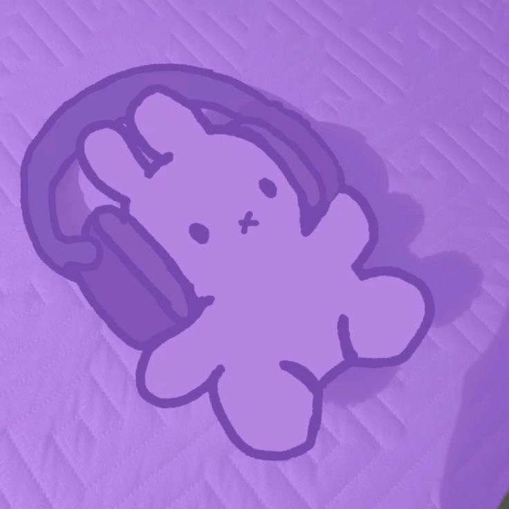

Welcome to my corner ! 🌸
˖ ֹ੭୧ Najma ⊹ ࣪ ⑅
14 ! ✨ 7/2 🌙 she/her 💭

⤷ ゛About Me ˎˊ˗ ! 💫
Hi, I am Najma Salem. I'm 14 years old. My family is from Somalia, but I was born here in Houston, Texas. Languages I speak are English (obviously), Somali, some Arabic & Spanish. I attend YES Prep West Secondary. ☁️✨
More about me ! ✨
⤷ ゛Interests & Hobbies ˎˊ˗ ! 🎧
I love listening to music, baking, and reading books, manga & manhwa.Some artists I listen to are Bruno Mars & Laufey. I like to spend time with my family and go shopping. I also enjoy playing the violin, and I've been playing it for 4 years now!✨
⤷ ゛Favorite Things ˎˊ˗ ! 💜
My favorite color is purple, I love soft dreamy visuals, and I enjoy spaces that feel calm, sparkly, and expressive. I also love personalizing things so they feel like me.
⤷ ゛Something I'm proud of ˎˊ˗ ! 🌟
I am proud of expressing my personality with confidence and building a website that shows my vibe. Every section reflects who I am and what inspires me.
⤷ ゛Goals & Dreams ˎˊ˗ ! 💭
A goal I have is to one day graduate high school, and a couple of dreams I have are to travel the world and become a millionaire or be rich in some form or way.